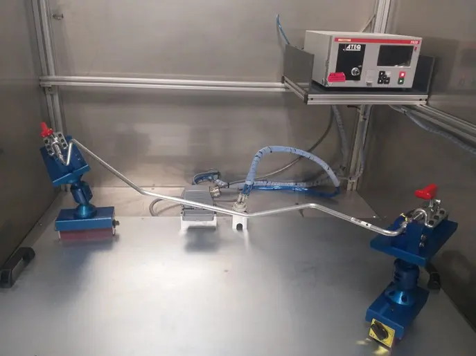

Fuga de Gas

Detección y cuantificación de fugas gaseosas en recipientes herméticos y tuberías. Evaluamos la integridad de los contenedores bajo condiciones operativas reales, garantizando seguridad industrial y cumplimiento ambiental.

Detección y cuantificación de fugas gaseosas en recipientes herméticos y tuberías. Evaluamos la integridad de los contenedores bajo condiciones operativas reales, garantizando seguridad industrial y cumplimiento ambiental.